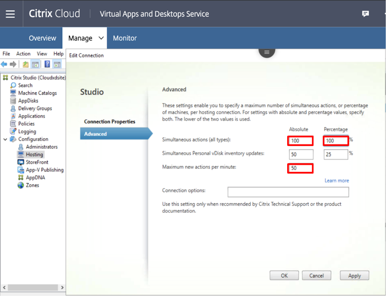

Context: Infrastructure Duration : 4 weeks Team-members: Citrix Dev Team
Problem Statement:
With a sudden uptick in number of workloads being migrated to cloud, customers demanded faster provisioning and power management operations
| Operation | Time (Minutes) |
|---|---|
| Create 2 catalogs | 10 |
| Provision 750 machines in each catalog | 249 |
| Start all machines | 33 |
| Stop all machines | 33 |
| Update Catalogs' image | 6 |
| Post Update Start all machines | 35 |
| Delete Catalogs | 34 |
We made some changes to the default configurations that customer will need to use to achieve the following performance and scale numbers. My blog on Scale and Performance for MCS on Amazon Web Services highlights all the details:
The recommended configuration to achieve the documented scale and performance is as follows:
